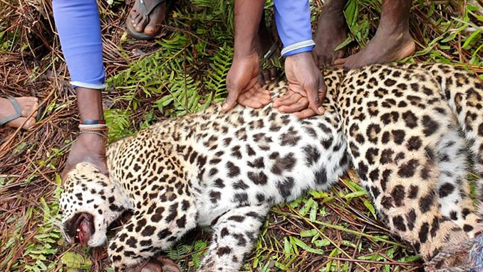
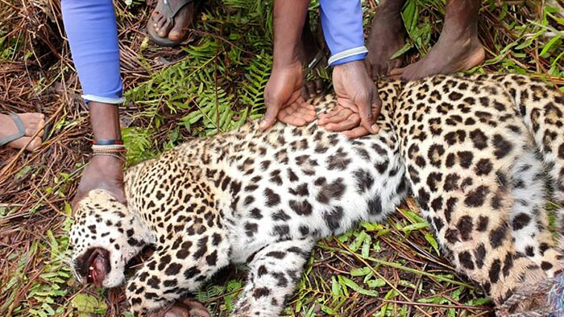

Srilankan Leopard.
The Sri Lankan leopard (Panthera pardus kotiya) is a leopard subspecies native to Sri Lanka. It was first described in 1956 by Sri Lankan zoologist Paules Edward Pieris Deraniyagala.[2] Since 2020, the Sri Lankan leopard has been listed as Vulnerable on the IUCN Red List, as the population is estimated at less than 800 mature insectioniduals, and is probably declining


 
